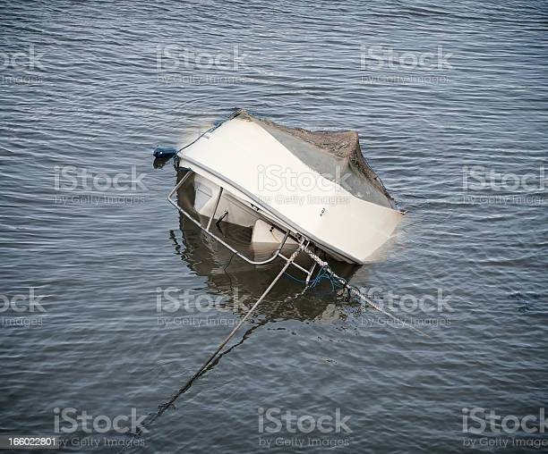

<!DOCTYPE html>
<html xmlns="http://www.w3.org/1999/xhtml"></html>
<html lang="en">
  <head>
    <meta charset="UTF-8" />
    <meta http-equiv="X-UA-Compatible" content="IE=edge" />
    <meta name="viewport" content="width=device-width, initial-scale=1.0" />
    <title>Paseo en lancha</title>
    <link rel="stylesheet" href="bootstrap/css/bootstrap.min.css" />
    <style>
      body {
        font-family: Verdana, Geneva, Tahoma, sans-serif;
      }
      h2 {
        color: black;
        text-align: left;
        font-size: 16px;
        margin-top: 30px;
        margin-bottom: 60px;
        margin-left: 30px;
      }

      h1 {
        color: darkblue;
        text-align: center;
        font-size: 37px;
        margin-top: 30px;
        margin-bottom: 60px;
      }
      p {
        color: black;
        text-align: justify;
        font-size: 30px;
       
      }
      a {
        background-color: darkblue;
        color: white;
        text-align: center;
        text-decoration: none;
        margin: 6px;
        border-style: solid;
        padding: 10px;
        border-color: darkturquoise;
        font-size: 20px;
        margin-top: 20px;
        margin-bottom: 20px;
      }
      nav {
        text-align: center;
        font-size: 25px;
        margin-top: 30px;
        margin-bottom: 30px;
      }

      footer {
        background-color: darkblue;
        margin: 6px;
        border-style: solid;
        padding: 1px;
        border-color: darkturquoise;
        color: white;
        text-align: center;
        font-size: 17px;
      }
    </style>
  </head>
  <body>
    <header>
      <h2>Sustos y tragedias en Misiones</h2>
      <h1>Paseo en lancha</h1>
    </header>

    <div class="container p-2">
      <div class="row p-2">
        <div class="col-md-7 p-2">
          <p>
            Al día siguiente decidimos hacer el paseo en lancha bajo las Cataras
            del Iguazú. Nos pasó a buscar al hotel una trafic, con un guía que
            nos iba explicando paso a paso las seguridades que teníamos que
            tomar.
          </p>
        </div>

        <div class="col-md-5 p-2">
          
        </div>
      </div>
      <div class="row p.2">
        <div class="col-md-12 p-2">
          <p>
            Cuando iniciamos la aventura, podíamos sentir todo el poder y el
            ruido de las cataratas, también como nos mojaban las gotas del agua,
            quedamos empapados. Mientras mirábamos las increíbles y hermosas
            cascadas, el conductor de la lancha empezó a subir demasiado la
            velocidad, le gritamos que la reduzca y no nos hacía caso, parecía
            estar loco. Hasta que en un momento se le fue de las manos el
            control y chocamos contra unas rocas y se nos dio vuelta.
          </p>
        </div>
      </div>
    </div>

    <nav>
      <a href="se_ahoga_la_familia.html">Se ahoga la familia</a>
      <a href="la_familia_logra_sobrevivir.html">La familia logra sobrevivir</a>
    </nav>
    <footer>Autor: Ezequiel Daher</footer>
    <script src="bootstrap/js/bootstrap.bundle.min.js"></script>
  </body>
</html>
